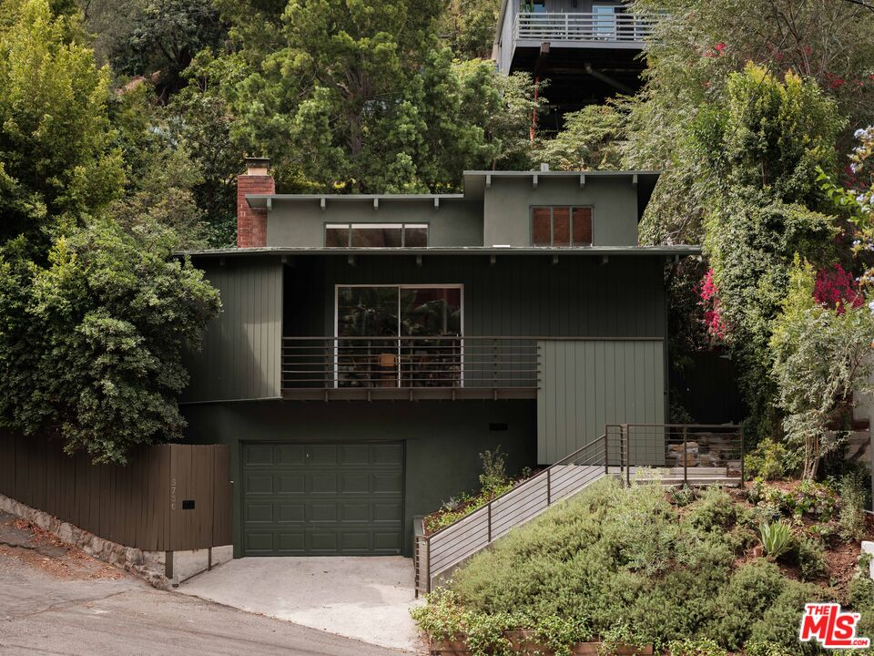
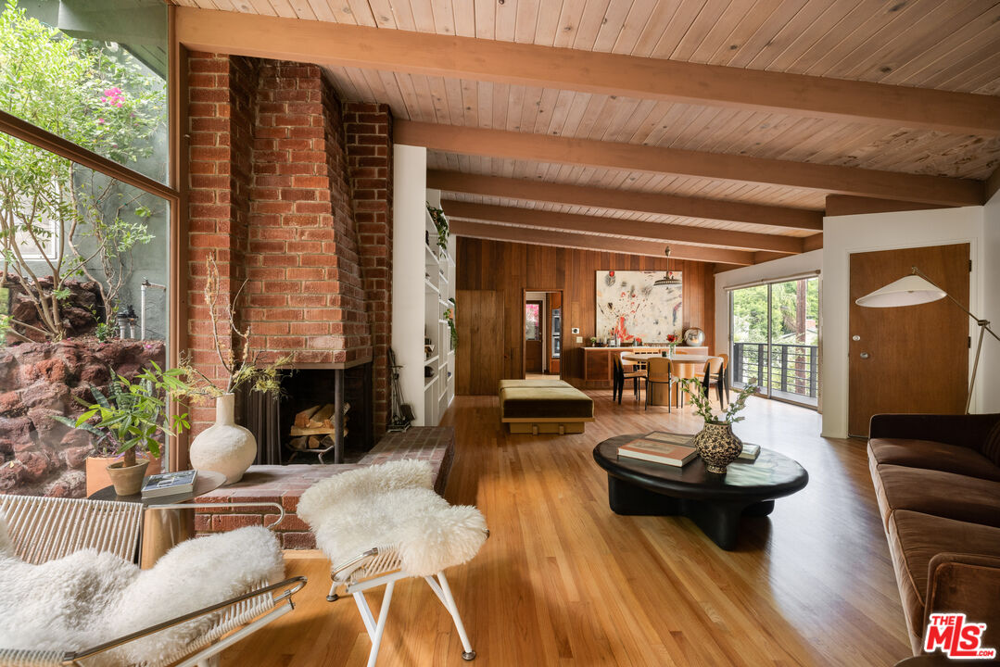
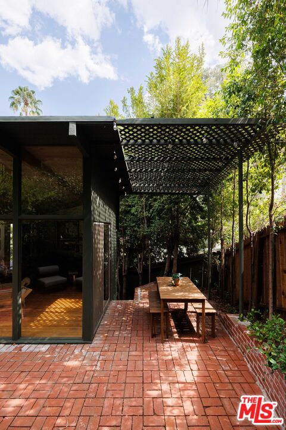
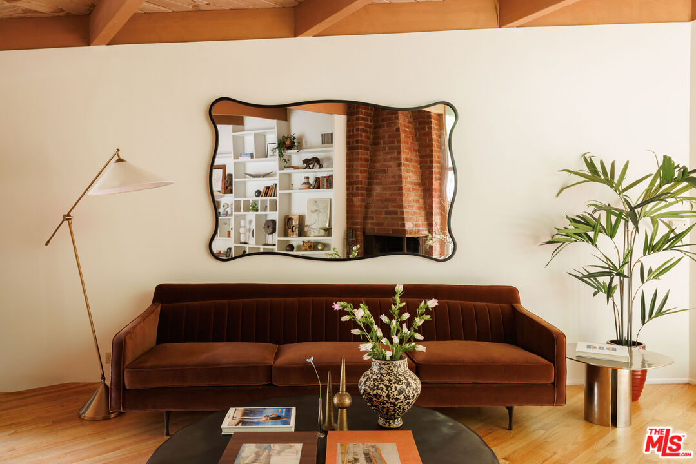

Obsession No. 013Los Feliz · Los Angeles
5730
Cazaux Dr
The bathroom floor is a deep blue tile scattered with tiny white stars, and it's the last thing you'd expect to find inside a 1956 post-and-beam house.
Why it made the edit
“A deep blue tile floor scattered with little white stars.”
This one made the list for the bathroom floor, of all things, a deep blue tile scattered with little white stars that I did not expect walking into a 1956 post-and-beam and could not stop looking at once I found it.
Architect Stephen Briggs designed the house, and it has had only two owners in its life, which explains why the original brick fireplace and the wood beam ceilings running through the main living space still feel completely intact instead of renovated into something else.
The whole downstairs opens through a glass wall onto a garden that spills right up to the window, and out back there's a brick patio under a steel pergola that gets dappled light through the trees in exactly the way you'd want.
Two bedrooms sit upstairs over the main living space below, 1,602 square feet total on a hillside lot above Beachwood Village and a short drive from Griffith Park, and this house has had exactly one thing happen to it in almost seventy years, people who loved it living in it. If a house that's been cared for instead of flipped is the kind of thing that gets you, I've got you.



Want to see it in person?
Curious about this one?
Let’s talk.
Listed by Rob Kallick & Sara Kaye, Compass. House of Zonshine does not represent this listing. Property details are from listing information and public sources and should be independently verified.